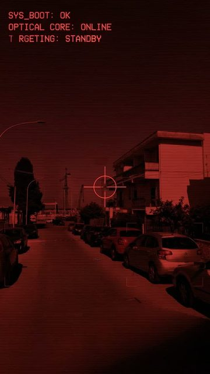
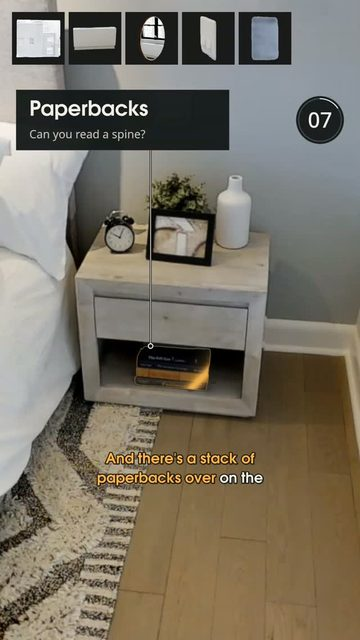
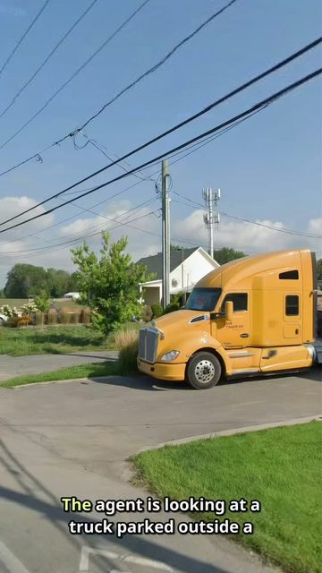
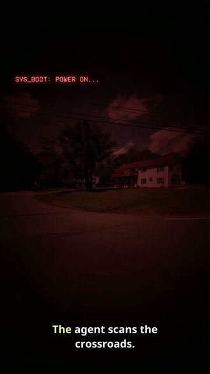

Where was this taken? Solved clue by clue. Think you know a spot it can't get? Send it.
Where Am aI is a short-form video series about finding places. Each episode starts from a few panorama views of an unknown spot, with no address and no map pin, and follows the search step by step until the exact location is found.
Some episodes are quizzes instead: three clues from one room or street, and you guess before the reveal.

Street search
Quiz: one bedroom
Street search
Street search Street searchTikTok @wheream.ai.official Instagram @wheream.ai
New episodes are published about once a day on both platforms.
Know a place it can't find? Send a photo, a film still or a street view link as a message on TikTok or Instagram. Any place is fair game. Chosen spots may become future episodes.